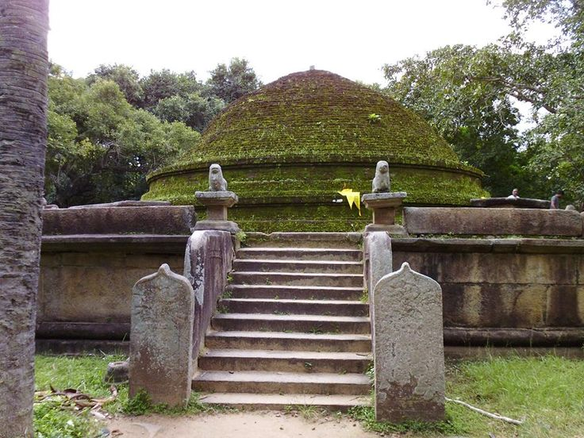

Explore the ancient ruins where King Kavantissa and Viharamahadevi were historically married, a sanctuary of royal history hidden in the south.
Magul Maha Viharaya is an ancient Buddhist temple complex located in Pottuvil, near Yala. Its name, 'Magul', translates to 'Marriage', reflecting the historical belief that this was the location where King Kavantissa married Princess Viharamahadevi after her miraculous landing at Kirinda. The ruins are some of the best-preserved examples of Anuradhapura-style architecture in the south of the island.
The site features a massive stupa, a beautiful stone moonstone, and several image houses surrounded by large, ancient trees. The 'Magul Maha' moonstone is unique for its depiction of mahouts on the elephants, distinguishing it from all other moonstones in Sri Lanka. It's a remarkably peaceful location, providing a quiet space for visitors to reflect on the stories of the kings and queens who once walked these grounds.
Back to Yala Hub